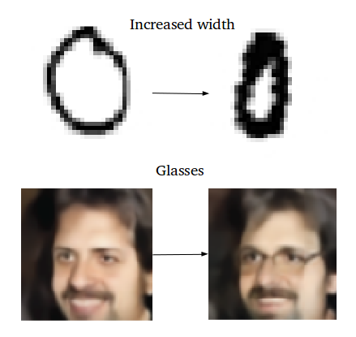
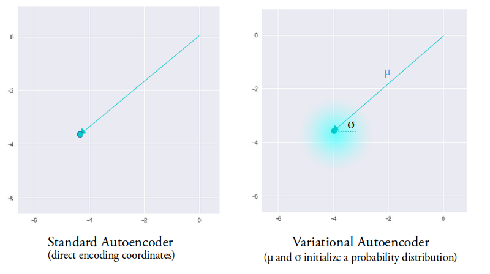

深度学习与降维
- 自编码器
- 稀疏编码器
- 变分编码器
稀疏编码器
- Regularized autoencoder
- Typically used to learn features for another task such as classification
- Loss function with penalty
- $$\mathcal{L}_{\text{sc}} = \underbrace{||WH - X||_2^2}_{\text{reconstruction term}} + \underbrace{\lambda ||H||_1}_{\text{sparsity term}}$$
变分编码器
- Generative Model
- Learns a latent variable model for its input data.
- Learning the parameters of a probability distribution modeling your data


Why VAE
Explore variations on data in a desired, specific direction
What the Variational Means

Machine Learning
Applications and practices